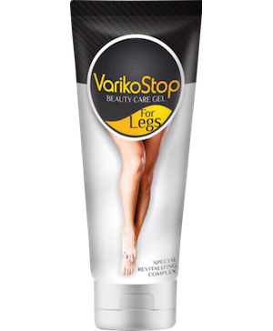
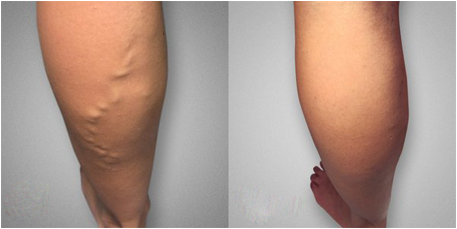
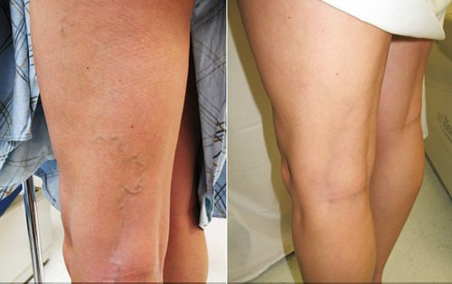
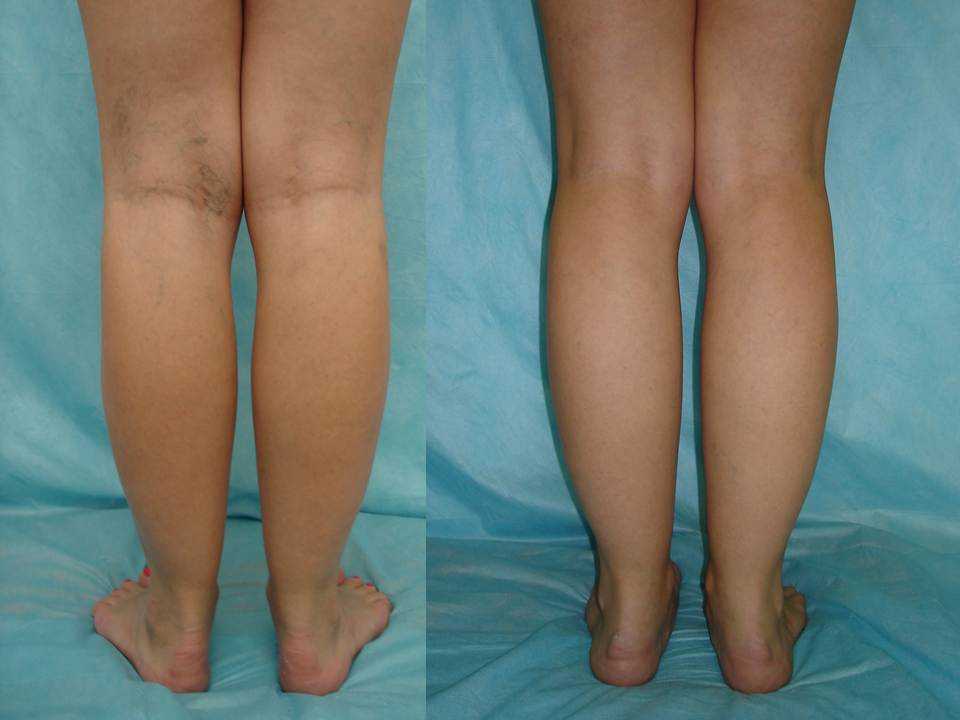

श्वेता का ब्लॉग
कैसे मैंने अपस्फीति से १ सप्ताह में निज़ात प्राप्त की
Published | Author: श्वेता
नमस्कार दोस्तों, मैं पुनः आप लोगों के समक्ष अपनी ख़ुशी साझा करने के लिए उपस्थित हूँ....हर उपाय को आज़माने के बाद अंततः मैंने अपस्फीति से निज़ात १ सप्ताह में घर पर ही प्राप्त कर ही ली!!!
क्या आपको याद है कि लगभग १ वर्ष पहले मैंने अपने पैरों में बहुत दर्द और नसों में अपस्फीति की समस्या के बारे में इत्तला किया था? मैंने आपसे समाधान के विषय में जानकारी देने को कहा था - कि कैसे इससे निज़ात पायी जाये.
तो मैंने हर संभव प्रयास किया और प्रत्येक देशी जडी-बूटी को भी आज़मा कर देखा जैसे सन्टी की कलियाँ और भी अन्य फ़ालतू की चीज़ें, साथ ही अन्य दवाएं जिनसे रक्त के संचार में वृद्धि और दबाब में सुधार आता है. यह सब कुछ फ़ालतू है. यह बिलकुल भी फायदा नहीं करता है. यह अच्छा नहीं है.
मैं डॉक्टर्स के पास गयी परन्तु मेरी मदद के बजाय वे मुझपर भड़क पड़े कि मैंने इसके इलाज़ में देरी कर दी है. मैंने अपने कार्यालय से बिना तनख्वाह की एक सप्ताह की छुट्टी ले ली. मैं गहरे अवसाद से ग्रस्त हो गयी, और पूरे-पूरे दिन सोफ़े पर बैठ कर यही सोचती रहती कि कैसे इस अपस्फीति से निजात पायी जाये और वापस अपने सुन्दर और स्वस्थ पैरों को प्राप्त किया जाए. मैंने इन्टरनेट पर इसके बारे में खोज़बीन करना प्रारंभ कर दिया.
अपस्फीति का इलाज़ अंततः प्राप्त कर लिया गया?!
एक बार मैं इन्टरनेट पर खोज़ कर रही थी तभी एक छोटे से सन्देश पर जा कर मेरी निगाहें टिक गई जो कि मुंबई के फिलिबोल्जिस्ट द्वारा एक मेडिकल फ़ोरम में लिखा गया था. इसमें कहा गया था कि हमारे देश में अपस्फीति का इलाज़ इसलिए कारगर नहीं है क्योंकि इसके इलाज़ में हम पारंपरिक मशीनों से इस रोग का इलाज़ नहीं करते बल्कि इसके लक्षणों का इलाज़ करते हैं.
डॉक्टर ने मुझे एक नयी एंटी वैरिकोज़ क्रीम प्रदान की, जिसके परिणाम बहुत ही सकारात्मक रहे थे. मैंने इसके बारे में और भी जानकारी इकठ्ठा कि इस क्रीम को कहाँ से लिया जाए और आख़िरकार मुझे यह स्टोर मिल गया.
शुरुआत में तो मुझे इन सब बातों पर बिल्कुल भी विश्वास नहीं हो रहा था क्योंकि टी.वी. पर बहुत से उत्पादों का प्रचार होता है...परन्तु इस के बारे में मुझे बहुत ज्यादा अच्छी समीक्षाएं देखने को मिली इसलिए मैंने इसको मंगवाने का निर्णय लिया.
तो मैंने को मंगवा लिया. मेरे पास पैकेज लगभग १ सप्ताह में पहुँच गया. मैंने हर पैकेट को खोला, निर्देशों को पढ़ा और फ़िर उसके बाद में उसका प्रयोग प्रारंभ कर दिया.
इसके परिणाम कैसे हैं? क्या अपस्फीति अब ठीक है?
मैंने इस क्रीम का प्रयोग उसके निर्देशों के अनुसार प्रारंभ किया. आप विश्वास नहीं करेंगे कि केवल ५ दिनों में मेरी नसों की सूज़न गायब हो गयी तथा वैरिकाज - वेंस मेरी आँखों के सामने गायब होनी प्रारंभ हो गयीं. मैं इस बात से इतनी हैरत में आ गयी कि मेरा मुंह ही खुला रह गया!!! मुझे अपस्फीति से निज़ात प्राप्त हो गयी!!! वो भी केवल ५ दिनों में!!! क्या आपको इस बात पर भरोसा होगा???? मुझे तो अपनी आँखों पर ही भरोसा नहीं हो रहा था.... मेरे पैर वैरिकाज नसों के चंगुल से छूट गए, वे फ़िर से पहले जैसे सुन्दर हो गए और दर्द भी गायब हो गया!!! मैं कोई गलती नहीं कर रही थी और मैं पागल भी नहीं हो रही थी!! मैं आपको बता नहीं सकती कि मैं कितनी ख़ुश हूँ. आख़िरी बार मैं इतनी ख़ुश तब थी जब शायद मैं २० वर्ष की थी :)
अब मुझे लगता है कि पूर्ण रूप से स्वस्थ इन्सान हूँ. मैं अपनी बीमारी के लिए कृतज्ञ हूँ क्योंकि- अपस्फीति ने मुझे यह सिखा दिया कि कैसे चीज़ों की कद्र करें और समस्याओं को अलग नज़रिए से देखना प्रारंभ करें. मैं कभी भी यह सोचने की हिम्मत नहीं कर पा रही थी कि अगर यह क्रीम मुझे प्राप्त नहीं होती तो न जाने मेरा क्या होता. अब मेरी ज़िन्दगी में दुःख-दर्द, उदासता और खिन्नता का कोई स्थान नहीं रहा, अब केवल और केवल सकारात्मकता से मैं भरी रहती हूँ!!
मैं बहुत ही कृतज्ञ हूँ कि चीज़ें कुछ इस प्रकार से बदलीं. मुझे अपस्फीति से छुटकारा प्राप्त हो गया और साथ ही साथ मुझे इस बात का अहसास हुआ कि मेरे जैसे बहुतों की ऐसी ही समस्या है और उनके लिए कोई भी सामान्य उपाय कारगर नहीं सिद्ध होता है, और सबसे कठिन सर्जरी का ही एक विकल्प नज़र आता है. परन्तु ऐसा नहीं है. कोई भी व्यक्ति अपस्फीति से निज़ात एक आसान,तीव्र और सुरक्षित ढंग से प्राप्त कर सकता है. यह जांचा और परखा जा चुका है!
उनके लिए जो कि इस बात में दिलचस्पी रखते हैं, मैंने इस वेबसाइट से अपने लिए इस क्रीम को ऑर्डर किया था. यह हमारे देश में एकमात्र प्रमाणित कंपनी है जो कि की बिक्री करती है. शिपिंग की बात करें तो इसे डाक के माध्यम से भेजा जाता है और इसका भुगतान सामान की प्राप्ति पर कैश से किया जा सकता है. तो हर चीज़ सुरक्षित है .
इस क्रीम की कीमत में अभी के लिए थोड़ी कमी आयी है इसलिए ऑर्डर करने में जल्दी करें!
तो, मैं इस बात की आशा करती हूँ कि यह जानकारी आपके लिए फ़ायदेमंद हो और आप फिर से अपने सुन्दर,स्वस्थ पैरों को वापस कुछ दिनों में प्राप्त कर पायें! बहुत-बहुत शुभकामनाएं!





ऑनलाइन ब्लॉगर


२७९ और..बिना तस्वीर के